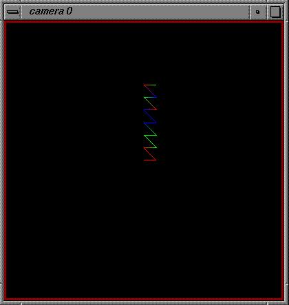
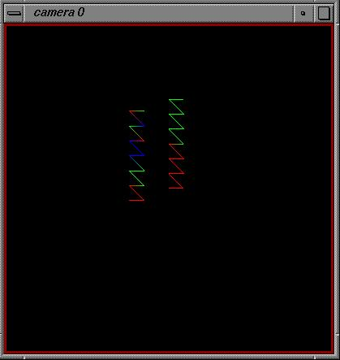
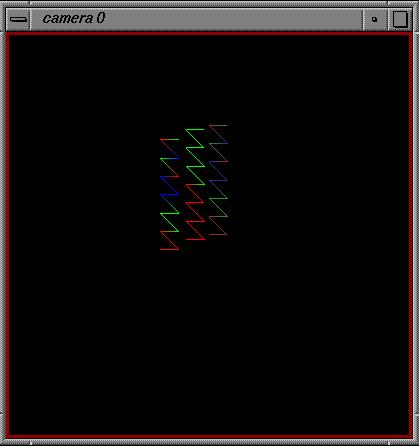
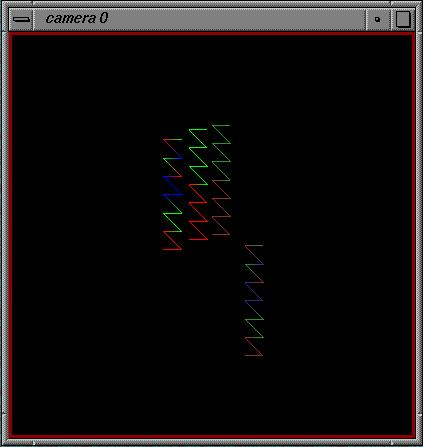
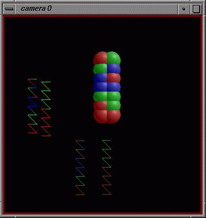
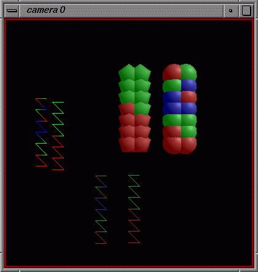

and defining some colors:
>>> RED = (1., 0., 0.)
>>> GREEN = (0., 1., 0.)
>>> BLUE = (0., 0., 1.)
and collections of colors:
>>> col = ( RED, RED, RED, GREEN, GREEN, GREEN, BLUE, BLUE, BLUE,
RED, GREEN, BLUE, RED, GREEN )
>>> col2 = ( RED, RED, RED, RED, RED, RED, RED, GREEN, GREEN, GREEN, GREEN, GREEN, GREEN, GREEN)
Define a list to specify the faces of the lines we make later:
>>> ind = (range(14),)
Start up a viewer :
>>> from DejaVu import Viewer
>>> vi = Viewer()
and make a line:
>>> from DejaVu.IndexedPolylines import IndexedPolylines
>>> p = IndexedPolylines('testColor', vertices = v, faces = ind,
materials = col)
and add it to the viewer:
>>> vi.AddObject(p)
to see the new object, we have to redraw the scene:
>>> vi.Redraw()

and make another line:
>>> p2 = IndexedPolylines('testColor2', vertices = v, faces = ind,materials
= col2)
and add it to the viewer:
>>> vi.AddObject(p2)
to see the new object, we have to redraw the scene:
>>> vi.Redraw()
With these two objects in the viewer, try changing the current object and transforming it.

Add another line:
>>> norm = ((1.0, 0., 0.0 ),) * 14
>>> pn = IndexedPolylines('testMaterial', vertices = v, faces =
ind,
materials = col, vnormals = norm)
>>> vi.AddObject(pn)
to see the new object, we have to redraw the scene:
>>> vi.Redraw()

Add another line:
>>> pn2col = IndexedPolylines('testMaterial2', vertices = v, faces
=ind,
materials =col2,vnormals = norm)
>>> vi.AddObject(pn2col)
to see the new object, we have to redraw the scene:
>>> vi.Redraw()

Finally, try making some rows of spheres colored differently:
>>> from DejaVu.Spheres import Spheres
>>> s1 = Spheres('test', centers = v, radii = (0.4,), materials
= col, quality=15)
>>> vi.AddObject(s1)
to see the new object, we have to redraw the scene:
>>> vi.Redraw()

Add another set of spheres, colored differently with default quality.
>>> s2 = Spheres('test7', centers = v, radii = (0.4,), materials
= col2)
>>> vi.AddObject(s2)
to see the new object, we have to redraw the scene:
>>> vi.Redraw()
